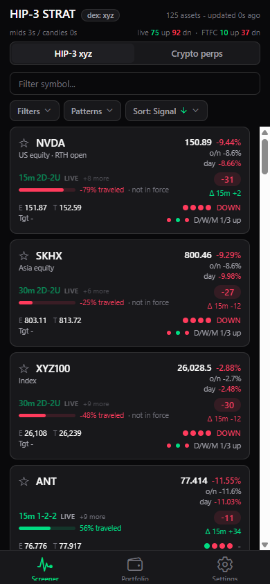
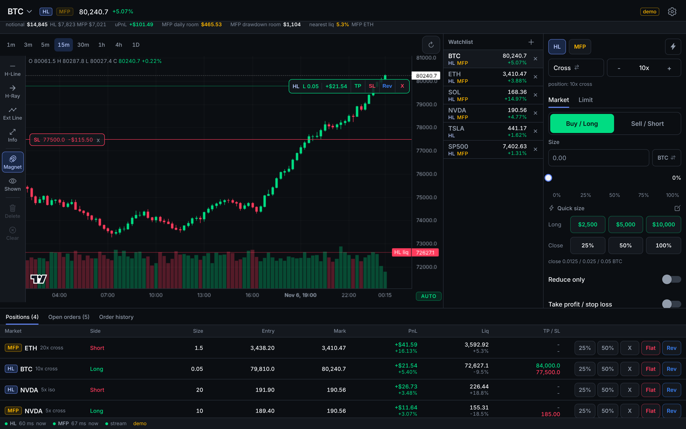
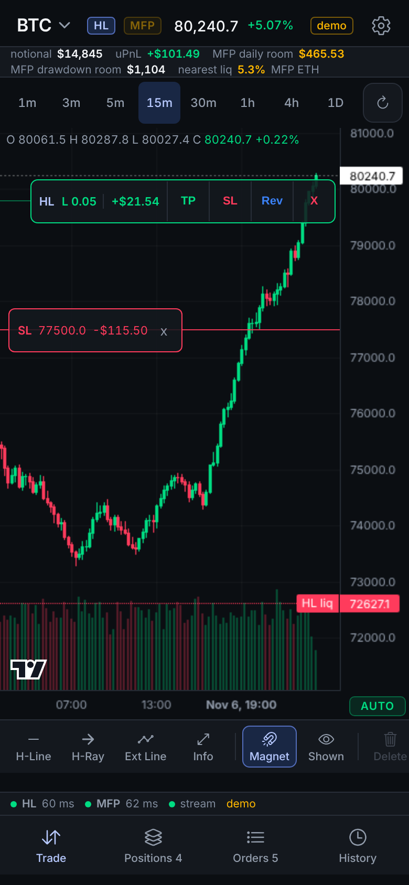

An always-on market scanner that pushes sharp moves, volume spikes and price levels to your phone and watch, a mobile app that shows your Hyperliquid and MyFundedPerps positions side by side, and a chart-first terminal that trades both.
It is a working prototype. I built it for my own trading and use it on a live MyFundedPerps challenge account. It is not affiliated with or endorsed by MyFundedPerps.

Every number on screen comes from a recorded response of the scanner's own state endpoint.
A funded account is lost on one bad move you did not see. The daily loss limit and the drawdown limit do not care whether you were at the desk. The markets I trade, HIP-3 equity, index and commodity perps and the crypto majors, move at night and on weekends.
I wanted three things I could not get in one place: alerts that arrive every time, whether or not an app or a browser tab is open; a single screen that shows what I hold on every account; and a way to get out fast from a phone, with enough checks that a fat thumb cannot make things worse.
Three parts. The scanner does the watching on a server, so the phone never has to stay awake. The app and the terminal are the two places you read it and act on it.
A small server process that watches every HIP-3 market and the Hyperliquid crypto perps, re-checking prices every few seconds. It runs all day, every day.
Every alert fires on a change, once, and then stays quiet until the next change. A move that is still in progress does not keep buzzing.
Alerts go out as native Android push notifications, which a paired watch mirrors on the wrist. There is no separate watch app to install. The same feed can also go to ntfy, Discord or Telegram. You star the tickers you care about and only those alert.
[SPIKE] NVDA -2.31% in 15m (4.2x its normal range) [RVOL] SILVER 15m rvol 61 (>= 50) [LEVEL] BTC crossed above 80,000 [LIVE] AMD D 2D-2U up entry >526.99 stop 498.48 tgt 552.25 [INVAL] AMD D 2D-2U
The app shown at the top of this page. It renders the scanner's output and adds the account side.
A second version is in testing on my phone. It adds a one-tap filter for the tickers MyFundedPerps lists (read from the public market list, no key needed), several MyFundedPerps accounts at once, a performance chart that marks the 00:00 New York daily reset and shows drawdown, and tap-to-chart with drawings that persist.
A chart-first terminal for the desk, with a phone layout. One watchlist, one chart, and a Hyperliquid / MyFundedPerps switch on the order ticket.
The first live MyFundedPerps orders went through it on 17 Nov 2026: a limit buy placed, shown resting in both the terminal and on MyFundedPerps, then cancelled. The rest of the live test list (market orders, exits, closes, reverse) is still open.


REST for every read and write, with the account stream as the signal for when to read. The builders page lists what a build should do; this is where the project stands on each point.
| Guideline | What the code does |
|---|---|
| Test on a sandbox key first | Sandbox and live are separate hosts. A key is refused unless its prefix matches the host it is used on (fp_test_ for sandbox, fp_live_ for live). |
| Idempotency key on every order | Every write carries a fresh Idempotency-Key and client_order_id. It is sent once and never resent. If the answer is lost, the app looks the order up by its client_order_id instead of sending again. |
| Read-only access for watching | Two keys. A Read Only key does all the polling. The trade key is read only at the moment of a close or reverse, behind a fingerprint, and is tied to one account. The account stream is held on the Read Only key too. |
| No keys in code, URLs, logs or commits | Keys are typed in by the user and kept in the phone's secure storage (the terminal's web build keeps them in the tab's memory only). A build check fails the release if a log line mentions a key or if the app calls any MyFundedPerps path outside its short allowed list. |
| Respect the account's rules | The trading policy is read before a reverse. If the account is blocked, reduce-only or restricted from opening exposure, the reverse is refused before anything is sent. |
| Do not make things worse | A close re-reads the position first and aborts if side or size changed. A reverse opens the other side only after the close reads filled and flat. Any doubt ends flat, never doubled. |
| Use the account stream, not polling | Built, not yet released All of the clients now hold the account stream on the Read Only key, receive-only. A pushed event is a signal to take the normal REST reading again, so nothing unconfirmed is shown or acted on. Checked against the sandbox stream on 26 Nov 2026: the connection, the opening snapshots, the 15-second heartbeat, and order, fill, position and account events. The timed poll stays as a slower fallback. |
| Back off on 429 / 503 | Built, not yet released Every GET is counted per key. Background reads stop below the limit and wait out Retry-After; the reads a close needs are always sent; an order lookup backs off instead of spinning, and still never resends. In tests the terminal's reads fell from 52 a minute to 17 with the stream down and about 7 with it live. No real 429 has been met yet. |
Endpoints in use: accounts, account trading policy, open and closed positions, orders (including lookup by client_order_id), the public market list and market quotes for reads; position close, order create and order cancel for writes; and the account stream, receive-only.
An independent project. Not official MyFundedPerps software. Nothing here is a promise of profit or of passing a challenge. Charts in the terminal are drawn with TradingView Lightweight Charts.